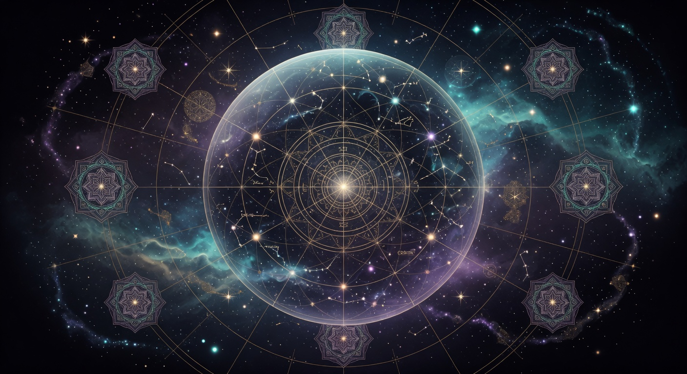

Ancient Precision That Still Surprises Modern Science
We often assume that precise measurement of the heavens began with Galileo, Kepler, and Newton. The truth is more layered. Long before optical instruments, Indian astronomers were building sophisticated models of planetary motion, calculating the size of the Earth, and working with time scales that dwarf the ones common in other ancient cultures.
The Surya Siddhanta, in versions dating back at least 1,500 years (with roots possibly much earlier), contains remarkably accurate values for the length of the year, the inclination of the ecliptic, and the diameters of the Sun and Moon. Aryabhata in the 5th century calculated the Earth’s circumference and the length of the sidereal year with errors of only a few percent or less.
These were not lucky guesses. They came from centuries of naked-eye observation, careful record-keeping, and mathematical techniques (including the use of sine tables and iterative methods) that were advanced for their time anywhere in the world.
Some traditional calculations of the speed of light, when the units are properly understood, come within a few percent of the modern value of 299,792 km/s. Whether this was derived from observation or from a deeper cosmological model remains debated — but the numerical closeness is difficult to dismiss as pure coincidence.
What made this precision possible was not only technique. It was an underlying picture of the cosmos that was already enormous. The Puranas spoke of yugas lasting hundreds of thousands of years, kalpas of billions. The Earth was not the center of a small closed system; it was one small part of a much larger, cyclic, and populated universe.
When your default cosmology already assumes immense time and space, you are more likely to look for — and find — subtle regularities in the movements of the planets. The measurements were in service of a larger vision, not the other way around.
Modern astronomy has given us radio telescopes, gravitational wave detectors, and images of galaxies billions of light years away. The ancient astronomers gave us disciplined long-term observation and a mathematical-poetic framework that treated the cosmos as alive, cyclic, and meaningful.
Neither invalidates the other. When we hold both, we gain something rare: precision without losing wonder, and wonder without losing rigor. The rishis who measured the stars were not doing “proto-science” in the modern sense. They were doing something parallel and equally sophisticated in its own terms — mapping the same sky with different instruments of mind and eye.
“The next time you look up at night, remember that people with only their eyes and patient minds once tracked the planets well enough to predict their positions centuries ahead — and did so while believing the cosmos was breathing, cyclic, and full of other worlds.”
This deep exploration provides full translated excerpts and analysis from Surya Siddhanta, Aryabhata’s Aryabhatiya, and Puranic astronomical passages; compares ancient yojana-based measurements with modern values in detail; explores the philosophical role of observation in Vedic astronomy; includes reconstructions of ancient computational methods; and offers extended reflections on long-term attention, humility before the sky, and how precise measurement coexisted with mythic cosmology. Rich cross-links to breathing cosmos and exoplanet multiplicity.
Read the Full Deep Article~1,000 words • 6 min read